{kind=link}
While a big hit with the hula in Rosiclare, Illinois � Jennifer�s dancing career really never got going.
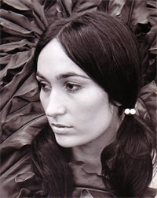
{kind=link}
�High Chaparral Period�
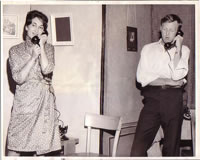
{kind=link}
"Touring in WEDDING BREAKFAST in the Catskills"
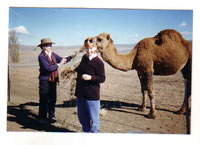
{kind=link}
"In Australia with friend Wendy and a very large kangaroo."
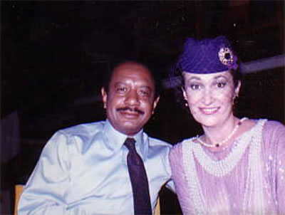
{kind=link}
Jennifer Rhodes & Sherman Hemsley on the set of GHOST FEVER
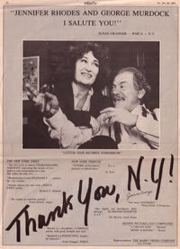
{kind=link}
Variety Ad of LESTER SIMS RETIRES TOMORROW

Dog-chewed photo from production of "Murder at the Mystic Palace". Two bimbos on my right are Jeanine and Kate.
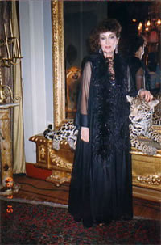
{kind=link}
As Madame St. Esprit on the set in GHOST FEVER
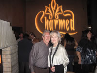
{kind=link}
At CHARMED wrap party with Phil Wilson
{kind=link}
In the Galapagos Islands "I think they're in love"
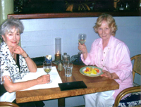
{kind=link}
with friend Wendy in Kauai 2009
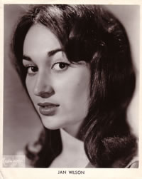
{kind=link}
Her first professional acting picture in New York.
{kind=link}
Thirty-something
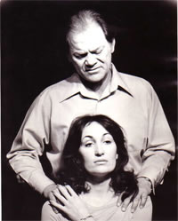
{kind=link}
Jennifer Rhodes and George Murdock in "The Exercise"
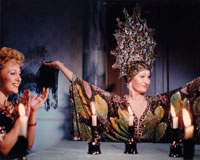
{kind=link}
GHOST FEVER "That head gear was heavy"

Jennifer with heavy weight champ Joe Frazier on the set of GHOST FEVER
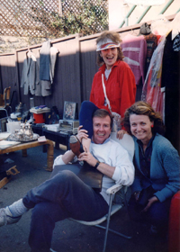
{kind=link}
Selling my tap shoes at a yard sale. With Bill Cort who played my husband in "Heathers".
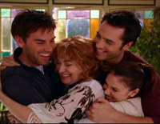
{kind=link}
Last episode of Charmed

Jennifer's #1 Main Squeeze, Bill

On location in Thailand; Jennifer with Nancy Kwan and crew.
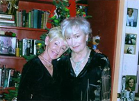Christmas 2007 with family, Pat
{kind=link}
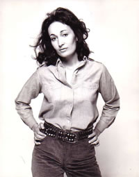
{kind=link}
Twenty-something
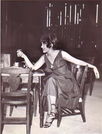
{kind=link}
College production of BUS
STOP.
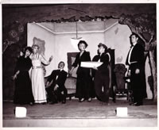
{kind=link}
Jen at far left in A �Melodrama in Minnesota�
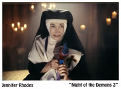
{kind=link}
As Sister Gloria in "NIGHT OF THE DEMONS 2"
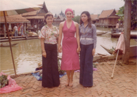
{kind=link}
On location in Thailand with the makeup crew. OUT OF THE DARKNESS
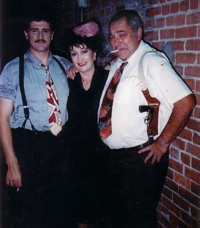
{kind=link}
From production of "Detective Story"in Hollywood.
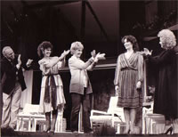
{kind=link}
Understudying Joyce Van Patten at the Doolittle Theatre in Hollywood
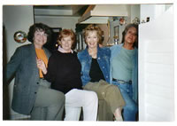
{kind=link}
A chorus line with buddies, Penelope, Wendy & Sandra

Jennifer with friend Wendy in Bora Bora in 2004
{kind=link}
"Intrepid in Tasmania 2008"